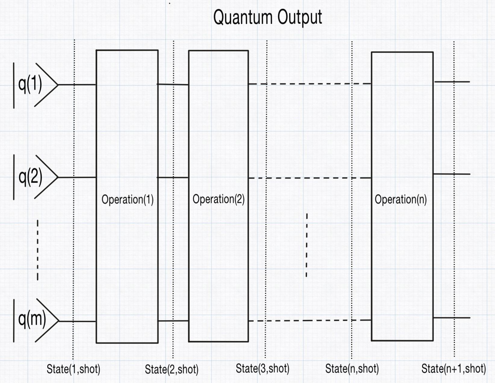

How you execute the quantum program on quantum states
Given a QuantumProgram and an initial qubit state, the program can be executed using runQuantumProgram. This execution sequentially applies each time-ordered operation in the program to the qubit state, starting from the initial state. The process transforms the state step by step into a new qubit state, which constitutes a single execution step. However, due to the inherent probabilistic nature of quantum computing — particularly the randomness in measurements and the subsequent state collapse — one execution step does not provide sufficient data for meaningful statistical analysis. To address this, the single execution step is repeated multiple times, as specified by the nrOfShots parameter.
In QubiSim, the output of runQuantumProgram is a QuantumOutput, which contains a two-dimensional array of states. The first index of this array corresponds to the qubit state after each time-ordered operation in the program, with the first entry representing the initial qubit state. The second index represents the repetitions of the single execution step, aka the shot.

QubiSim supports two types of states: state vectors (VectorState) and density operators (DensityState). If a time-ordered operation in the program is a MeasureOperation (the measurement result IS revealed to the observer), its result is stored in the Measured field of the state; otherwise, this field is set to nothing. The state type used throughout the program execution is determined by the type of the initial qubit state, which can be created using createInitialQubitState. For a DensityState, the state includes not only the density operator but also the calculated entropy and purity values (calculated with calculateEntropyAndPurity).
A given QuantumOutput allows you to retrieve specific data as follows: use getState to access a particular state across all shots, getShot to access a specific shot across all states, and getStateShot to retrieve a specific state and shot combination.
With convertVectorStateToDensityState you can convert a VectorState into its corresponding pure DensityState. The function createByteIndexVector facilitates easy creation of the right initial qubit state in createInitialQubitState. With the functions createDoubleQubitWernerDensityState and createSingleQubitBlochDensityState you can create dedicated Werner and Bloch density states, respectively.